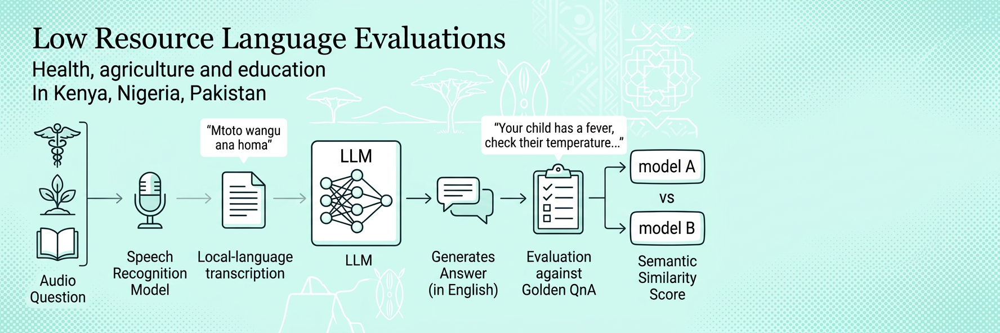
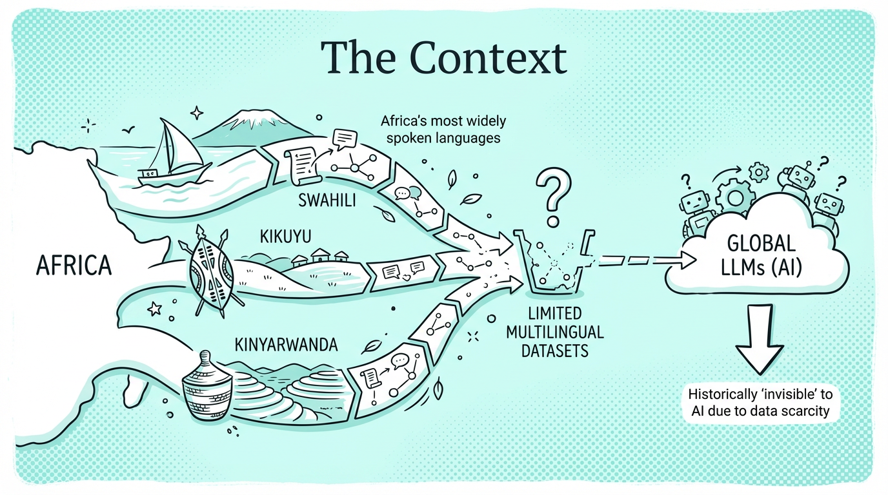
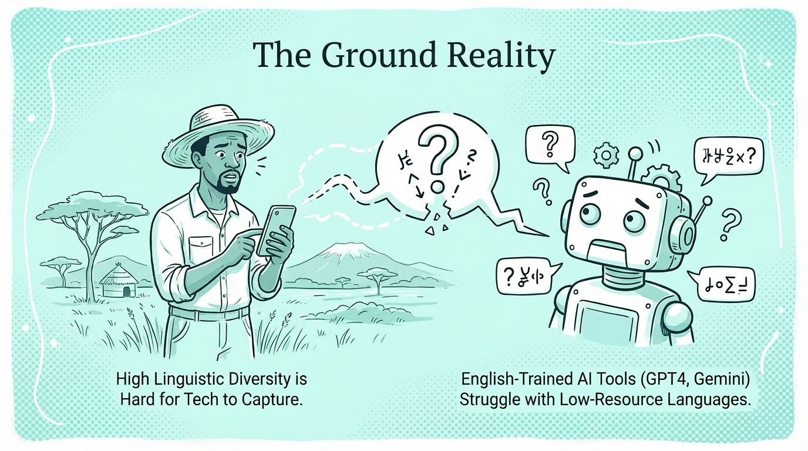
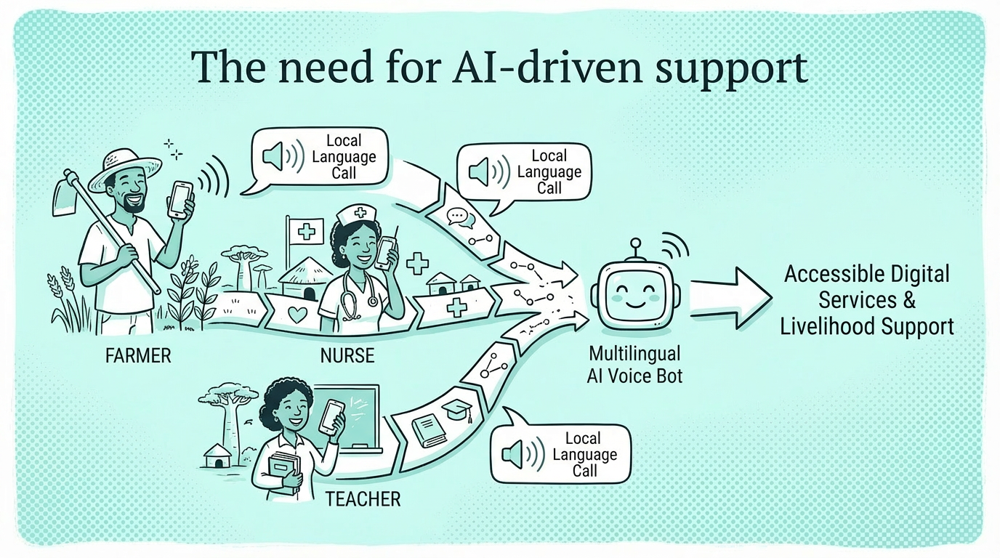
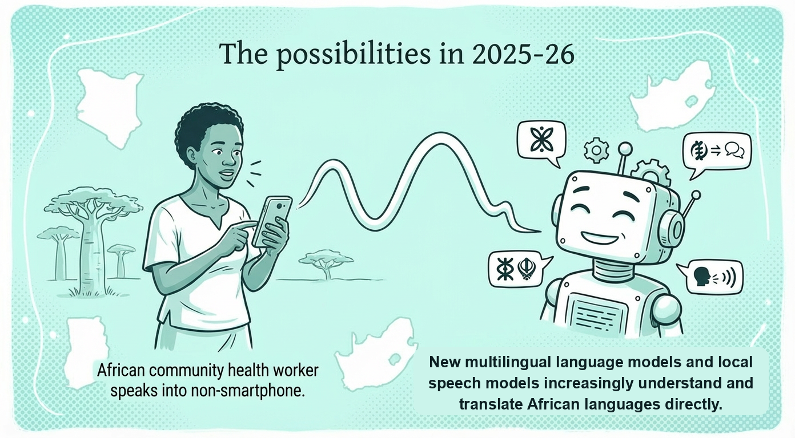
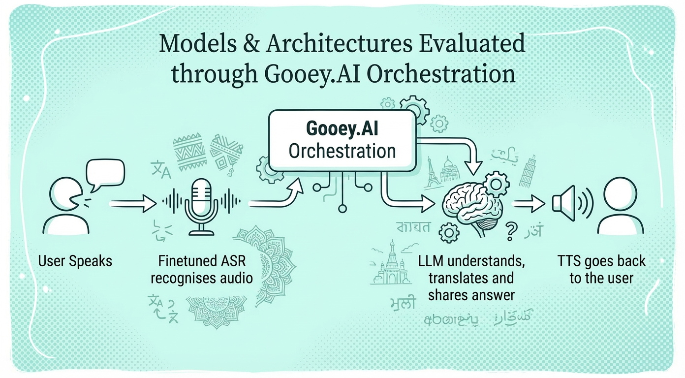
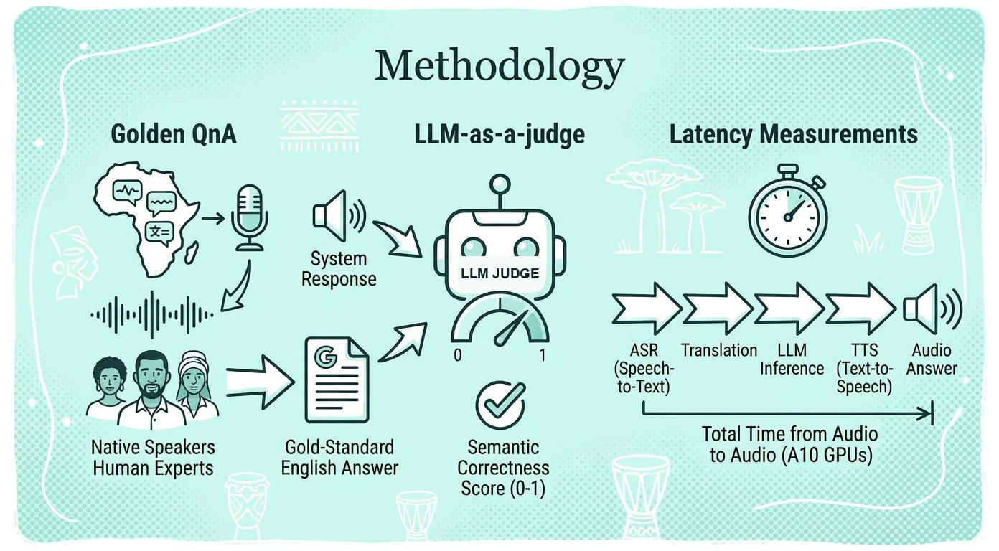
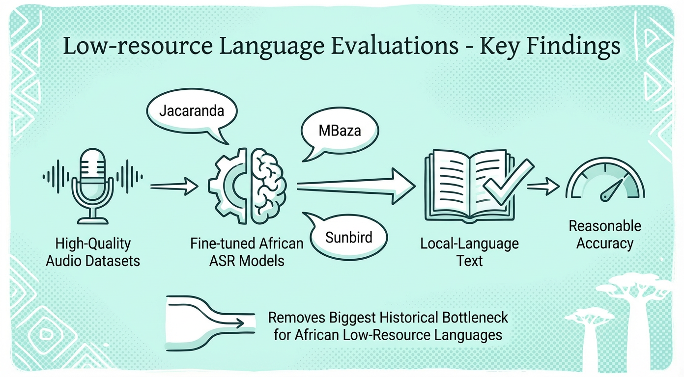
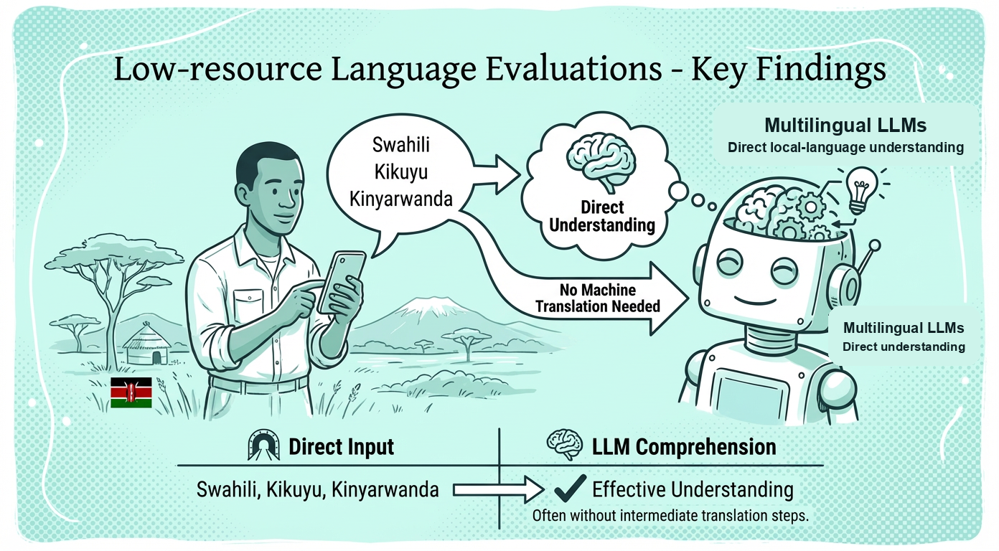
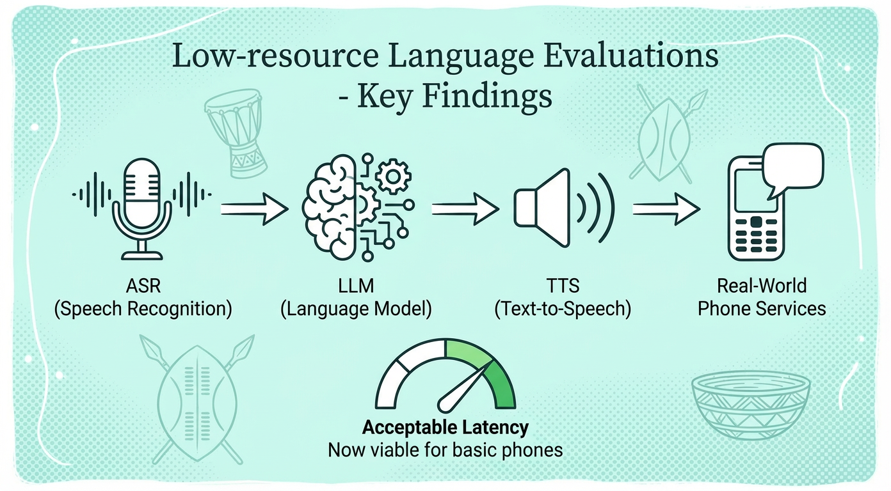

Low-Resource Language Evaluations
Do frontier AI models actually understand underrepresented languages?

Overview
As an AI orchestration platform focused on global impact, Gooey.AI - with the support of the Gates Foundation - actively aggregates and evaluates the latest private and open source AI models to assess their understanding of digitally underrepresented languages.
Our goal is to highlight real-world use cases of common health, agriculture and education audio questions and determine how well and how quickly different AI model combinations respond to these questions (as determined by their semantic similarity to expert provided “golden” answers).
Every evaluation, prompt, model setting, and AI workflow is public and immediately forkable, allowing organizations to test any AI workflow with their own data and use cases. Organizations are encouraged to create audio evaluations with their own data too.
Health Related AI Evaluations
These dated benchmark snapshots compare the specific speech and language models available when each evaluation was run. Across health audio questions in Pakistani and Nigerian languages, the strongest model chain varied by language: higher-accuracy systems often suited WhatsApp and asynchronous messaging, while faster chains were better candidates for live voice services.
Pakistani and Nigerian Languages
GPT-5.5 + Omni and Gemini 3.1 Flash-Lite + Omni shared the highest accuracy at 0.72. Flash-Lite + Omni offered the strongest speed–accuracy balance at ~9.6s, while the standalone Flash-Lite model was fastest overall at ~6.2s but less accurate.
Urdu evaluation →GPT-5.5 + Omni achieved the highest accuracy at 0.71 with 14.09s median latency. Gemini 3.1 Flash-Lite + Omni offered a stronger real-time balance at 0.53 accuracy and 8.04s, while standalone Flash-Lite was fastest at 6.01s but substantially less accurate.
Pashto evaluation →GPT-5.5 + Omni achieved the highest accuracy at 0.73 with 11.95s median latency. Gemini 3.1 Pro and its Omni configuration followed at 0.69 accuracy, while Gemini 3.1 Flash-Lite + Omni offered the strongest real-time balance at 0.55 accuracy and 7.28s.
Sindhi evaluation →Nigerian languages
Gemini 3.1 Pro achieved the highest accuracy at 0.71 while maintaining lower latency than most configurations at ~16.3s. Claude Sonnet 5 + Omni was fastest at ~13.6s, but its accuracy was considerably lower at 0.5.
Hausa evaluation →Gemini 3.7 Flash + Omni achieved the highest accuracy while delivering nearly the lowest latency, making it the strongest overall configuration at 0.59 and ~15.5s. Claude Sonnet 5 + Omni was marginally faster, but its accuracy fell to 0.23.
Nigerian Fulfulde evaluation →Kimi K3 + Intron achieved the highest accuracy at 0.55 and ~23s. GPT 5.6 Sol + Omni followed closely at 0.51 while delivering the lowest latency at ~14.9s, making it the strongest speed–accuracy trade-off.
Igbo evaluation →Gemini 3.1 Pro achieved the highest accuracy by a clear margin while maintaining moderate latency at 0.61 and ~17.2s. Claude Sonnet 5 + Omni was fastest at ~13.9s, but its accuracy was substantially lower at 0.27.
Yoruba evaluation →Kimi K3 + Intron achieved the highest accuracy at 0.75 and ~22.2s. Kimi K3 + Omni followed closely with lower latency at 0.71 and ~18.8s. Claude Sonnet 5 + Omni was fastest at ~16.2s with 0.62 accuracy.
Pidgin evaluation →General Q&A Evaluations
August 2026 evaluations show strong but language-specific results across East African speech AI. Top accuracy reached 95% for Swahili, 92% for Kinyarwanda, and 86% for Kikuyu, with the fastest configurations responding in roughly 5.8–6.7 seconds. Swahili performed strongly with a general multimodal model, while Kinyarwanda and Kikuyu benefited from different model and speech-recognition combinations—showing why each low-resource language needs its own evaluation rather than a one-size-fits-all benchmark.
Read the paper →East African Languages
DeepSeek V4 + Omni achieved the highest accuracy while maintaining relatively low latency at 0.92 and ~7.1s. Kimi K3 + Omni was fastest at ~6.7s, but its accuracy was lower at 0.78.
Kinyarwanda evaluation →Gemini 3.1 Pro was the clear leader for Swahili, achieving both the highest semantic accuracy and lowest response latency at 0.95 and ~5.8s. It delivered the strongest speed–accuracy balance of every configuration tested.
Swahili evaluation →Gemini 3.1 Pro + Kikuyu Whisper v2 was most accurate at 0.86 and ~9.5s. Gemini 3.7 Flash + Whisper v2 offered a strong balance at 0.82 and ~7.1s, while Claude + Whisper v2 was fastest at 0.63 and ~6.3s.
Kikuyu evaluation →Theory of Change
AI systems don’t understand local-language speech

The context
Many of Africa’s most widely spoken languages—such as Swahili, Kikuyu and Kinyarwanda—have historically been “invisible” to AI due to limited multilingual datasets used to train LLMs. This results in unequal access to AI and underrepresentation of people in underserved areas.

The ground reality
Capturing the diversity of local-language speech is difficult for teams building speech-recognition and translation models. Systems trained predominantly on high-resource languages can therefore perform poorly for speakers of digitally underrepresented languages.

The need for AI-driven support
AI interventions such as small shareholder agriculture advisory show significant promise in aiding livelihood opportunities in the Global South. Everyone regardless of their language or location should be able to access digital services through voice, not text.
Interventions and Process

A rapidly improving model ecosystem
Local NLP and AI teams such as Jacaranda Health and MBaza released better performing fine-tuned African speech recognition models. Additionally, Meta released Omnilingual ASR with support for 1600+ languages.
New generations of multilingual language models have substantially improved comprehension of local-language text.

Model chains and Architectures
We use various Models & Architectures to create the evaluation process. This is very easily configurable with the help of Gooey.AI's Orchestration tech that allows us to quickly chain ASR -> LLM -> TTS or more.

Our methodology
Golden QnA
Native speakers record audio questions in three African languages; human experts provide gold-standard English answers for consistent evaluation across systems.
LLM-as-a-judge
A separate language model scores each system response against an expert answer on a 0–1 scale. Publishing the judge, prompt, and settings makes this semantic-correctness measure reproducible as judge models evolve.
Latency measurements
Measures total time from audio question to audio answer, including ASR, translation, LLM inference, and TTS on A10 GPUs.
Key Findings

Breaking the audio barrier for African languages
Fine-tuned African ASR models—Jacaranda, MBaza, and Sunbird—trained on high-quality, diverse audio datasets, now reliably convert speech into local-language text with significantly improved accuracy. By addressing dialectal variation and acquiring local and region-specific finetuned training data, these models remove the biggest historical bottleneck for low-resource African languages, enabling scalable speech-to-text for research, civic tech, education, and voice interfaces across the continent and supporting inclusive digital access everywhere today.

Native text understanding without translation layers
Recent multilingual language models can understand Swahili, Kikuyu, and Kinyarwanda text directly in many use cases, reducing reliance on an intermediate machine-translation step. This improves downstream tasks such as information retrieval, summarization, and question answering. Native comprehension can reduce latency, translation errors, and developer overhead, enabling more accurate and accessible applications for local services, education, and frontline work.

End-to-end voice AI ready for real-world use
ASR→LLM→TTS pipelines now deliver acceptable latency and robustness for phone-based voice services on basic feature phones and low-bandwidth networks. SIP via Livekit and other telephony improvements for AI models reduce latency significantly. These end-to-end systems enable automated call handling, IVR, and conversational agents across several African languages, making scalable, affordable voice services for healthcare, banking, government, and small businesses with deployable latency and cost profiles today.
Create an evaluation with your own data
Follow our AI Evaluation Guide to design, run, and compare evaluations using your own dataset.
Learn More about AI Evaluation